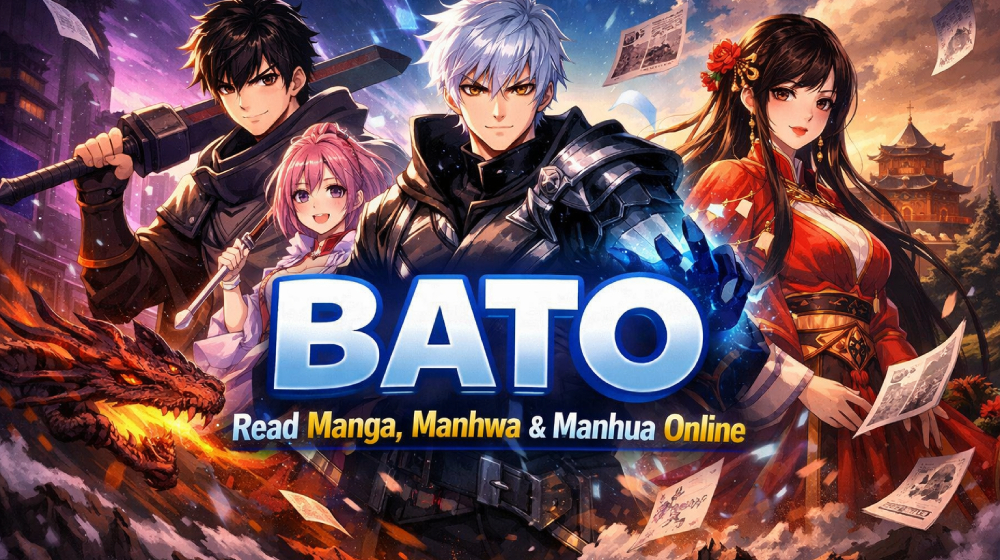

Step into Bato, a streamlined discovery hub for illustrated stories from Japan, Korea and China. Browse familiar genres, compare featured titles and find something new for your reading list.

Discover the Bato Manga Catalog
Bato is a compact catalog created for people who enjoy visual storytelling. Japanese manga, Korean manhwa, Chinese manhua and vertical webtoons appear together in a layout that adapts smoothly to phones, tablets and computers.
The page focuses on quick discovery: search by title, scan the cover cards or narrow the selection by format, origin and year.
Why Readers Explore Manga on Bato
The page combines useful discovery tools with a presentation that keeps attention on the stories:
✅ Variety Across Comic Formats
Move between romance, action, fantasy, comedy and drama titles spanning traditional pages and vertical-scroll releases.
✅ Artwork-Led Browsing
Prominent cover images are paired with essential details, making the collection easy to review at a glance.
✅ New Titles to Consider
A concise featured selection gives returning visitors a quick starting point for their next series.
✅ Straightforward Navigation
Search and filtering controls help readers find relevant titles without moving through multiple screens.
✅ Open Catalog Access
Visitors can explore every title shown on the landing page without first registering an account.
Top Manga Genres Available on Bato
The library covers many common reader interests:
- Shounen - energetic adventures, competition and friendship.
- Romance - relationships, comedy and emotional drama.
- Isekai - reincarnation, magic and alternate worlds.
- Horror - supernatural mysteries and psychological stories.
- Slice of Life - everyday experiences and character growth.
- Seinen, Josei, Sports and Fantasy - stories for a wide range of tastes.
How to Use Bato
Getting started takes only a few steps:
- Open Bato: Visit the home page in your browser.
- Browse or Search: Enter a title or use the genre, country and year filters.
- Choose a Title: Select a card that matches what you want to read.
- View the Series: Continue to the available title information.
- Return Later: Bookmark the site or the title in your browser.
Features That Make Bato Useful
- Reader focused: A compact interface that emphasizes titles and artwork.
- Simple filters: Narrow results by format, country or publication year.
- Multiple formats: Discover manga, manhwa, manhua and webtoons.
- Dark mode: A low-glare interface suited to evening browsing.
- Responsive layout: Cards reflow automatically on smaller screens.
- Fast search: Filter the visible catalog without reloading the page.
Browsing Bato More Safely
The catalog does not ask visitors to create an account, submit payment details or download software. Treat unfamiliar external destinations carefully and confirm links before sharing personal information.
Bato vs Other Manga Reading Platforms
The following table summarizes the experience provided by this landing page:
| Feature | Bato | MangaDex | Typical Aggregator |
|---|---|---|---|
| Free to Browse | ✅ | ✅ | Usually |
| Registration Needed | ❌ | Optional | Varies |
| Responsive Layout | ✅ | ✅ | Varies |
| Community Focus | ✅ | ✅ | Limited |
| Multiple Comic Formats | ✅ | ✅ | Varies |
Supporting Manga Creators
Distribution rights vary between regions and individual series. When a licensed edition is available, buying the release or using an official subscription directly supports writers, artists and publishers.
Tips for Manga Fans Using Bato
- Bookmark titles that interest you.
- Use filters to narrow a large catalog.
- Explore unfamiliar genres to find hidden favorites.
- Check the featured list for new discoveries.
- Support official editions of series you enjoy.
Alternatives to Bato
Readers looking for licensed or community-focused alternatives can consider MangaDex, MANGA Plus, WEBTOON, Tapas and publisher-owned services available in their region.
FAQs - Frequently Asked Questions about Bato
❓ Is Bato working now?
Availability can change over time. If the site does not load, refresh the page and check whether your internet connection is working.
❓ Is Bato down right now?
A temporary outage, maintenance period or domain change can make Bato unavailable. Try again later and avoid unverified mirror links.
❓ Where can I read now that Batoto is gone?
Look for licensed services available in your country, such as MANGA Plus, WEBTOON, Tapas or official publisher platforms.
❓ What is the current official Bato website?
Domains using the Bato or Batoto name may not belong to the original service. Verify a domain through trusted community announcements before using it.
❓ Are Bato mirror sites safe?
Not every mirror is trustworthy. Avoid entering passwords, payment information or downloading files from an unknown mirror.
❓ What are the best alternatives to Bato?
MangaDex and licensed platforms such as MANGA Plus, WEBTOON and Tapas are common alternatives, depending on the series and your region.
Start Exploring Illustrated Stories
With its dark theme, responsive cover grid and practical filters, Bato offers a focused starting point for discovering manga and related comic formats without distracting navigation.